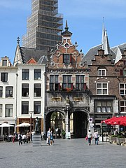

De Grote Markt, Grootemarkt of Kruismarkt is het grote plein in het centrum van de Nederlandse stad Nijmegen. Het plein heeft in de geschiedenis vele namen gekend, waaronder Cruys en Cruys Marct, vermoedelijk ontleend aan een kruis dat ter plaatse als zinnebeeld van het marktrecht heeft gestaan. Op 9 juli 1924 krijgt het bij besluit van de gemeenteraad officieel de naam "Groote Markt"
